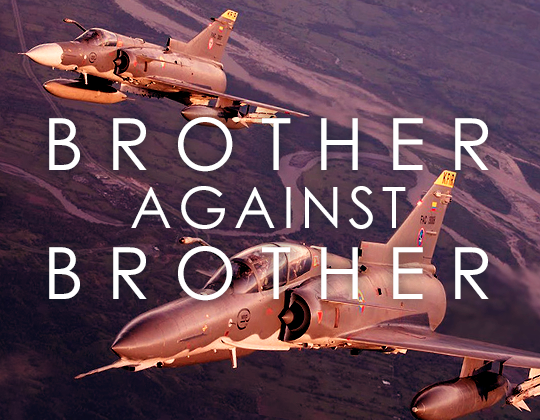

Original Concept By: Miguel Molina
Date: July 16th 2011
Location: Colombian / Venezuelan Border
Playable Side: Colombia
Duration: 3 days
Historically, several low intensity conflicts occured between the republics of Colombia and Venezuela following their independence, chiefly due to territorial disputes. More recently tension has again grown, fuelled in no small part by personal disputes between the presidents of both countries.
Colombia claims that Venezuela is knowingly providing refuge to units of Colombian rebels engaged in an ongoing insurgency; conducting raids in Colombia and then crossing the border into Venezuela to seek safe haven and materiel support. Venezuela vehemently denies the allegations, and is threatening to sever all diplomatic relations with Colombia.
In the last month a new draft agreement between Colombia and the United States enabling the establishment of US bases on Colombian soil is perceived by the Venezuelan establishment as an open provocation. The seed for war is sown...